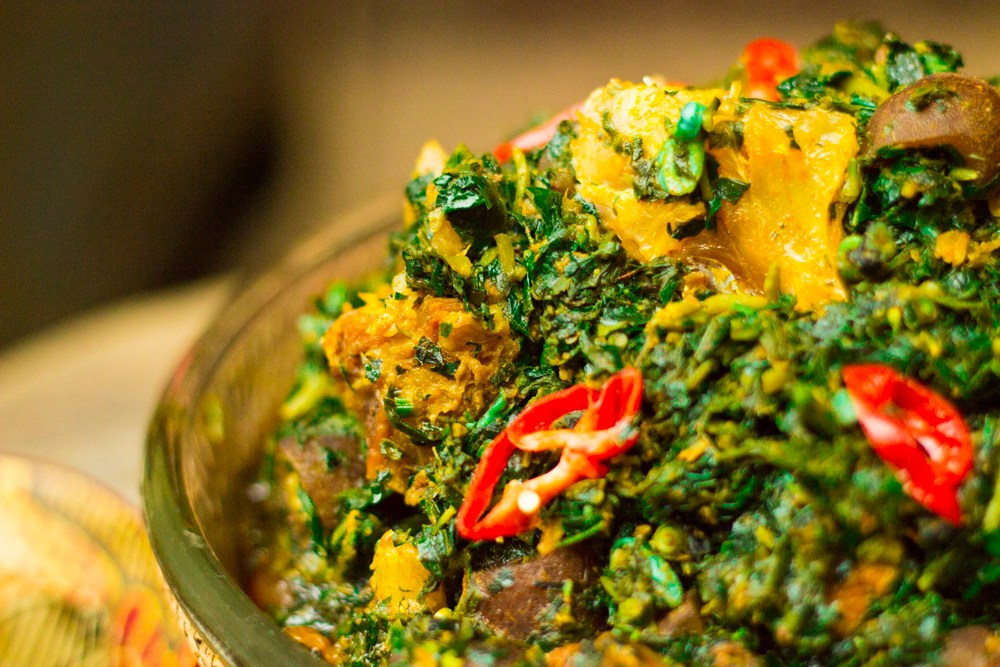

Recipes
Feel free to manipulate your own account

French Spaghetti
Cook the spaghetti in salted water about half of the way cooked. Drain, reserving some of the water. Taste the sauce and adjust the seasoning if necessary. Add the pasta to the sauce and cook over medium-high heat until all the liquid is absorbed and the pasta is al dente...

Hamburger
Cook the spaghetti in salted water about half of the way cooked. Drain, reserving some of the water. Taste the sauce and adjust the seasoning if necessary. Add the pasta to the sauce and cook over medium-high heat until all the liquid is absorbed and the pasta is al dente...

Edika Ikong
Cook the spaghetti in salted water about half of the way cooked. Drain, reserving some of the water. Taste the sauce and adjust the seasoning if necessary. Add the pasta to the sauce and cook over medium-high heat until all the liquid is absorbed and the pasta is al dente...